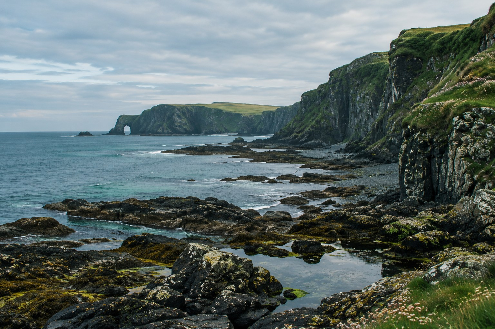
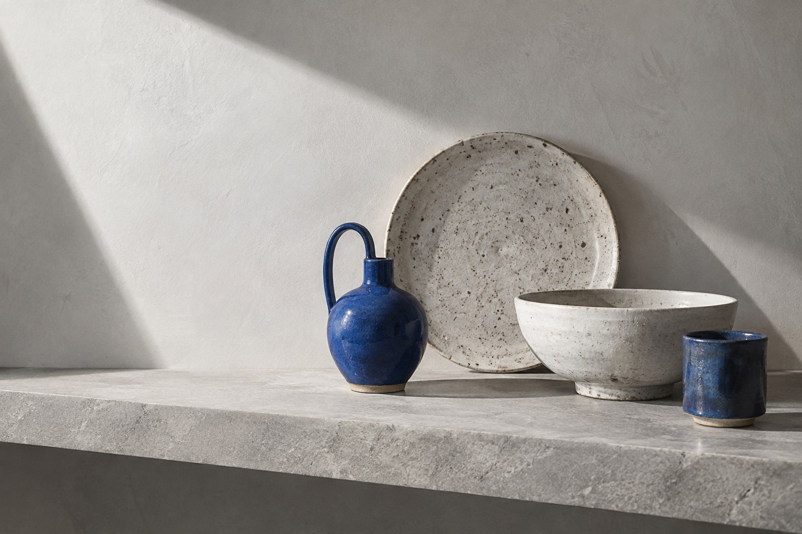

TidelandTideland
A coastal journal with an editorial identity, bilingual pages and a support journey.
Two subjects. Two visual languages.
Built to be explored.
Original portfolio concepts with fictional content. Explore the pages, try the interactions, or open an editable WordPress edition.

TidelandA coastal journal with an editorial identity, bilingual pages and a support journey.

FORM /A gallery-led shop with product discovery, object details and a persistent shopping bag.
Every concept includes responsive inner pages, keyboard-friendly controls and working demonstration flows.
WordPress editions run locally in your browser through WordPress Playground. Changes belong to your session. The original commerce and donation flows are simulations. The separate WooCommerce edition creates fictional test orders in its temporary session; no payment is collected.